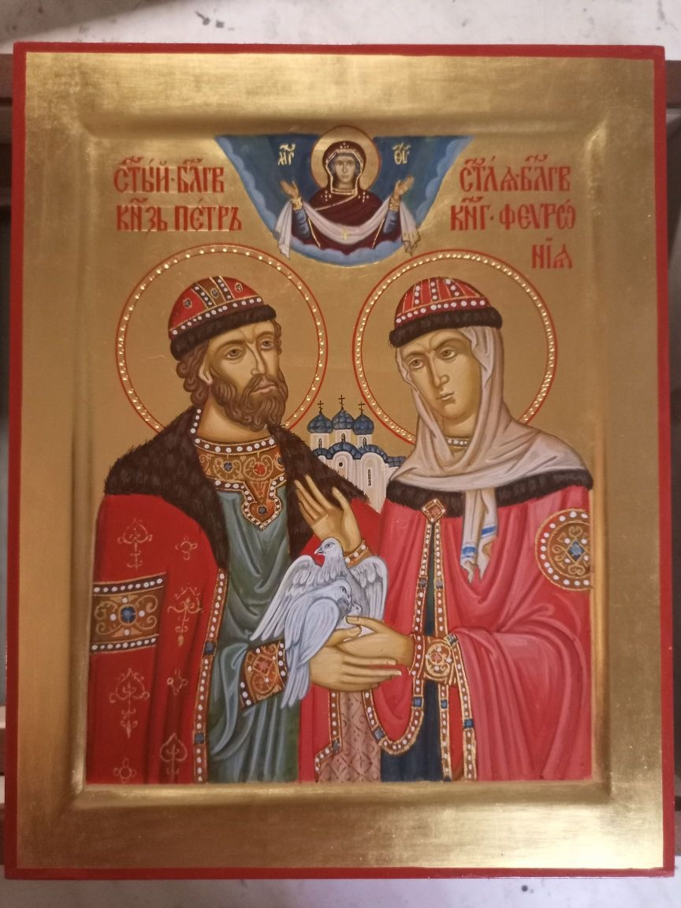
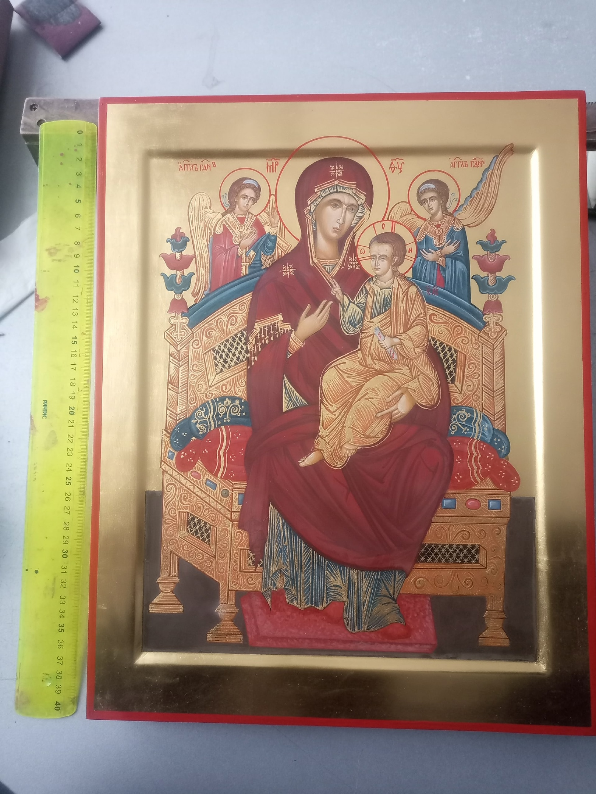
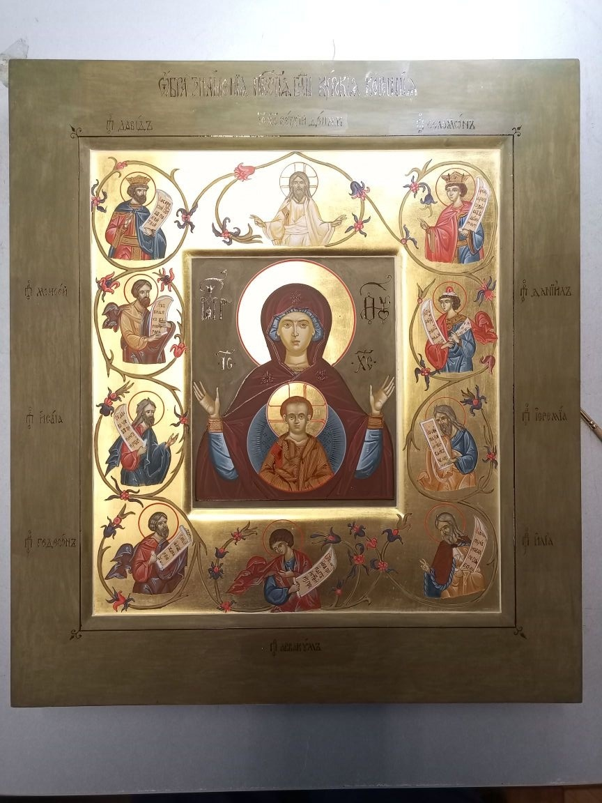
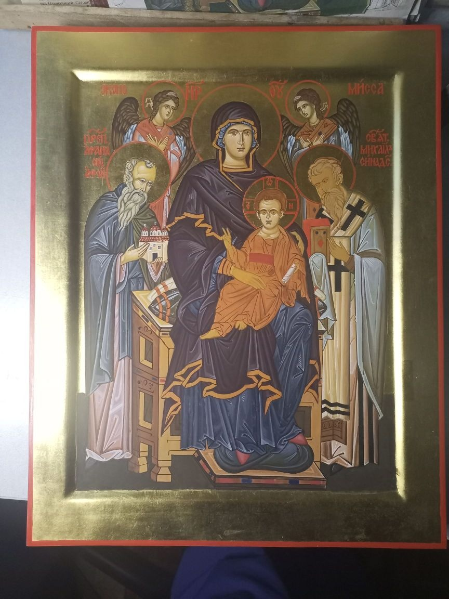
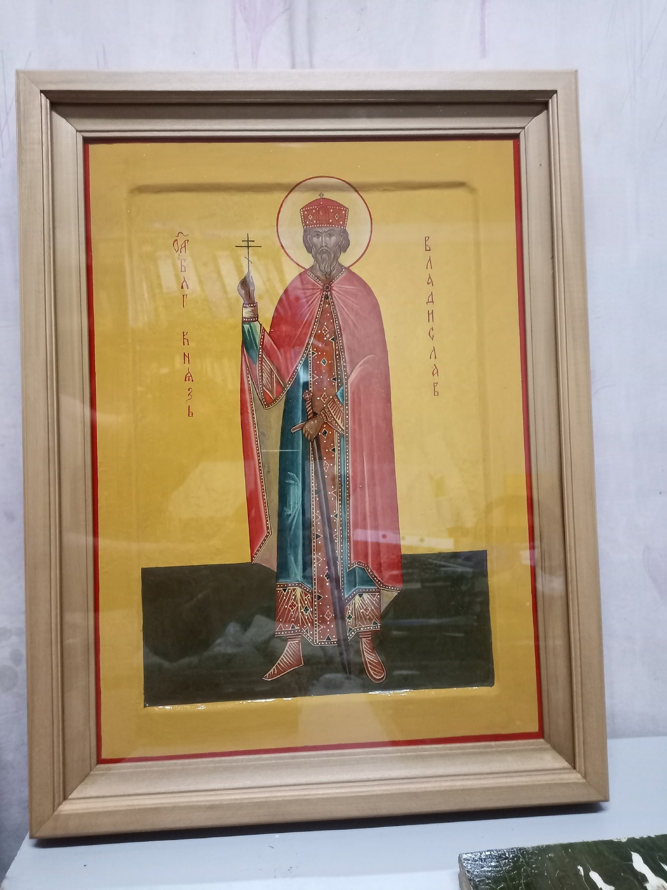
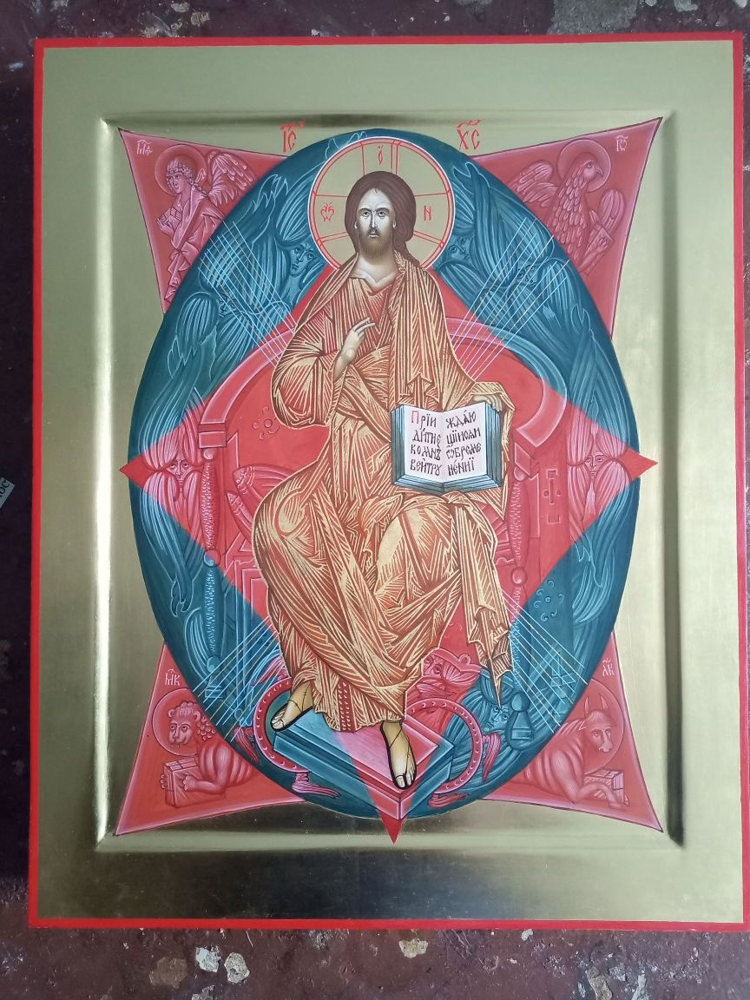

Иконопочитание и иконопись в богослужебной жизни Церкви Введение: Христианской символикой пронизано все церковное богослужение. Через символы приоткрывается верующим определенная, всегда живущая в Церкви реальность. «Мы не в состоянии подниматься до созерцания духовных предметов, – говорит святой Иоанн Дамаскин, – без какого-либо посредства, а для того, чтобы подняться вверх, имеем нужду в том, что родственно нам и сродно». Реальность, представляемая христианским символом, не есть реальность плоти, но реальность высшая, духовная. Изучать христианскую символику отдельно от богослужения невозможно: она развивалась вместе с богослужением, вместе с ним толковалась и раскрывалась отцами Церкви. Вне богослужения она теряет свой смысл, превращаясь в ряд отвлеченных, бесплодных понятий. В молитвах на освящение храма храм именуется «домом небоподобным», «образом жилища Божия», и освящается он «во образ святейшей Церкви Божией», то есть во образ Церкви как Тела Христова, как ее называет апостол Павел (Еф. 1, 23; Кол. 1, 18). Другими словами, храм есть образ, который иносказательно, символически выражает то, что непосредственно изобразить невозможно. «Если символ, как целесообразный, достигает своей цели, то он реально не отделим от цели... если же он реальности не являет... значит, как лишенный таковой, он не есть символ, не есть орудие духа, а лишь чувственный материал» (священник П. Флоренский). Христианская иконография, как одна из сторон Предания, вдохновляется и направляется Духом Святым, живущим в Церкви. Это Предание живет и выражается в иконе так же, как и в богослужебных текстах. Поэтому и говорят отцы VII Вселенского Собора, что «иконописание совсем не живописцами выдумано, а напротив, оно есть одобренное законоположение и предание Кафолической Церкви... Живописцу принадлежит только техническая сторона дела, а самое учреждение... зависит от святых отцов». Если обратиться к технике иконописания, то, по терминологии иконописцев, процесс создания иконы предстает как символический процесс постепенного раскрытия изображения, когда изображение, как бы уже заранее данное, проявляется, выступает на поверхности доски: тем самым иконописец не создает изображение, но открывает его. Так, например, мастер, пишущий «доличное», то есть одеяния, элементы пейзажа и архитектуры, по терминологии иконописцев, «раскрывает» доличное; краска, которой он при этом пользуется, называется «раскрышкой». Священник Павел Флоренский (1882–1937) писал: «Художник не сочиняет из себя образа, но лишь снимает покровы с уже, и притом премирно, сущего образа: не накладывает краски на доску, а как бы расчищает посторонние налеты его, «записи» духовной реальности». В Деяниях VII Вселенского Собора (787) сказано далее: «...Изобразительность неразлучна с евангельским повествованием и, наоборот, евангельское повествование с изобразительностью... Что слово сообщает через слух, то живопись показывает молча, через изображение» (Деяние 6-е). Согласно этому определению, Церковь смотрит на икону не просто как на живописную иллюстрацию к повествованиям Священного Писания, но как на особую форму Откровения Божественной реальности. Священное Писание и образ «указывают и поясняют» одно другое. Поэтому икона в Церкви имеет не только литургическое, но и догматическое значение. Через богослужение и икону Божественное Откровение становится достоянием верующих. Образ становится уже не только символическим выражением истины, но более или менее адекватным представлением о ней, и в этом смысле критерий, определяющий соответствие иконы церковному Преданию, должен быть тот же, который мы применяем по отношению к священным и богослужебным текстам, то есть каноничность. Это значит, что икона не только по своему содержанию, но и по характеру его раскрытия должна строго соответствовать догматам веры, Священному Писанию и Преданию. В иконе недопустим произвольный полет фантазии художника, как это наблюдается в религиозной живописи. Светские критики усматривают в этом «консерватизм Церкви», препятствующий якобы развитию искусства. Но это – очевидное непонимание характера и цели христианского искусства. «Художественному творчеству, – писал священник Павел Флоренский, – канон никогда не служил помехой, и трудные канонические формы во всех областях искусства всегда были оселком, на котором ломались ничтожества и заострялись настоящие дарования». Каноническая форма возвышает художника до высоты, достигнутой уже соборным художественным гением, и этим освобождает его от необходимости «раболепствовать плоти», направляет его творческую энергию к богопознанию. Православная Церковь никогда не допускала написания икон на основе воображения художника, потому что это означало бы сознательный и полный разрыв с первообразом. Тогда имя, которое носит икона, уже не соответствовало бы лицу, на ней изображенному, то есть стало бы ложным. Лишенную грубых черт земного натурализма иконографию часто воспринимают как идеализированную форму выражения, совершенно лишенную реализма. Это недоразумение проистекает из того, что светское и церковное понимание реализма различны. Если светский художник-реалист стремится воспроизвести только видимую плотскими очами физическую реальность мира, да к тому же преломленную через его личное восприятие, замутненное страстями, то церковное видение мира таинственно прозревает во временном – вечное, в зримом – незримое, в тленном – нетленное, которое Церковь и раскрывает в иконописи и богослужении. Подлинная, каноничная икона выражает опыт святости. Искусство иконописцев Церковь рассматривает как очевидное свидетельство святости, богословие и благочестие в образе и цвете. Вот почему Церковь предписывает писать иконы по образцам, оставленным нам святыми иконописцами: «Изображай красками согласно Преданию, эта живопись так же истинна, как Писание в книгах, и Божественная благодать почиет на ней, потому что свято то, что она изображает» (святой Симеон Солунский). Потому церковное понимание искусства было, есть и будет одно: реализм. Это значит: Церковь, как «столп и утверждение Истины», требует только одного – истины в Духе Святом. Смысл иконы и ее ценность заключаются не в ее вещественной красоте, но в той духовной красоте первообраза, которая есть Богоподобие. В иконописи Церковь выражает догмат Преображения. Именно в иконе преображение человека и всей твари понимается и передается как вполне объективная реальность. Гармония и мир среди твари в Церкви, охватывающей весь мир, – вот основная мысль православной иконописи.
Работы Виталий Криворотенко
     